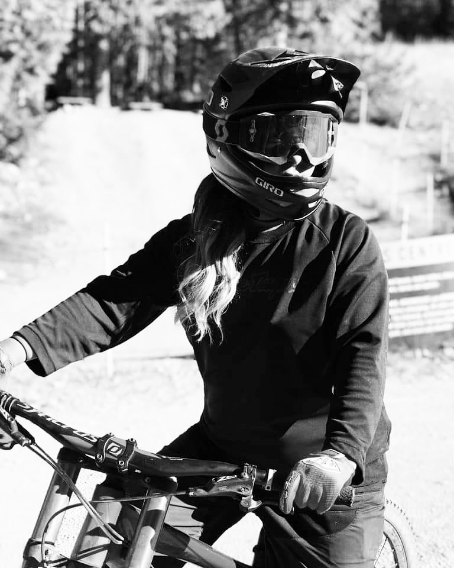
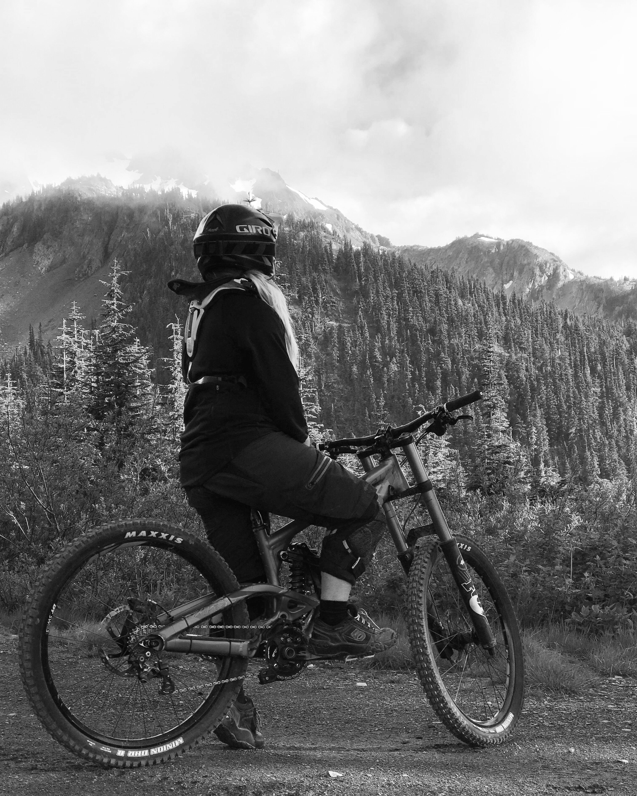
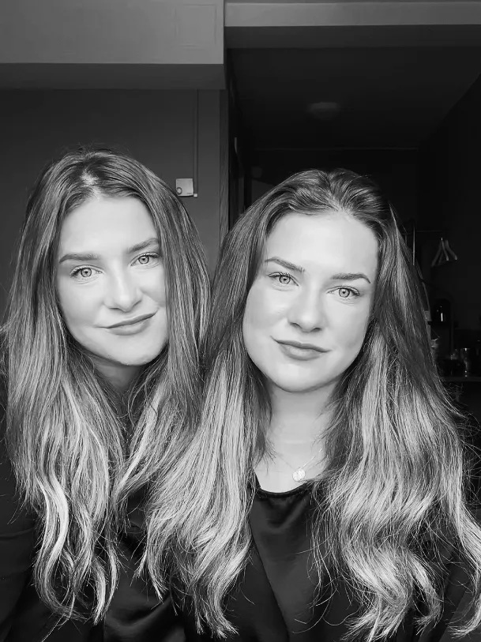

Mitt intresse för utförscykling
Mina fritidsintressen innefattar skidåkning, vandring, hundsport, spel och utförscykling. Jag har valt att berätta mer om den sistnämnda, eftersom den ligger mig väldigt varmt om hjärtat. Jag började cykla som 19-åring hemma i Åre Bike Park. Min syster blev introducerad till cyklingen av en gammal familjevän till oss och sommaren därpå köpte även jag en cykel. Vi hittade en otroligt rolig sport och gemenskap med andra cyklister som har gett oss vänner för livet.
Det fanns dock en plats som blev ett återkommande samtalsämne, både bland vänner och på sociala medier, vilket var Whistler Mountain Bike Park. Min tvillingsyster och jag bestämde sedan att vi ville uppleva det här stället och år 2019 reste vi dit. Vi som ändå är uppvuxna i Åre var verkligen intresserade när det fanns en destination som erbjöd grym skidåkning, storslagen natur och framför allt en helt enastående och unik cykelpark.



Whistler Mountain Bike Park
Förväntningarna var höga när vi kom till Whistler. Min syster hade åkt en månad tidigare än mig och berättade en hel del om hur det var därborta. När jag åkte upp med första liften så var min första kommentar när jag såg ut över utsikten "Åre kan slänga sig i väggen" och vi båda skrattade. Vi hade en helt oförglömlig sommar med fantastiskt väder, vi fick utmana oss själva i cyklingen med både svårare tekniska cykelleder samt hoppleder och vi träffade människor från hela världen. Vi badade i en sjö som hette Lost Lake på förmiddagarna, cyklade på eftermiddagarna och gick ut med vänner om kvällarna.
Vi blev bättre cyklister, vi fick uppleva Crankworx som är världens största cykelfestival där alla professionella cyklister deltog i olika tävlingar och event. Whistler levde verkligen upp till sitt rykte och två år senare åkte vi dit igen, vi kom dit på sommaren för att cykla men den här gången stannade vi även för vintern för att testa på den grymma skidåkningen. Med facit i hand, så är det den bästa resan och flytten jag har gjort och allt detta tack vare mitt intresse för utförscyklingen.
Här nedan kan ni se min topplista på mina favoritleder i Whistler Mountain Bike Park:
| Placering | Cykelled | Svårighetsgrad | Typ av led |
|---|---|---|---|
| 1 | No Joke | Svart | Teknisk |
| 2 | Ninja Cougar | Blå | Flow/Hopp |
| 3 | A-Line | Svart | Flow/Hopp |
Är du själv intresserad av att läsa mer om Whistler Mountain Bike Park? Besök destinationens officiella hemsida: Klicka här